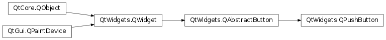
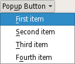

QPushButton¶
Inherited by: QCommandLinkButton
Synopsis¶
Functions¶
- def
autoDefault() - def
initStyleOption(option) - def
isDefault() - def
isFlat() - def
menu() - def
setAutoDefault(arg__1) - def
setDefault(arg__1) - def
setFlat(arg__1) - def
setMenu(menu)
Detailed Description¶
The
PySide2.QtWidgets.QPushButtonwidget provides a command button.
The push button, or command button, is perhaps the most commonly used widget in any graphical user interface. Push (click) a button to command the computer to perform some action, or to answer a question. Typical buttons are OK, Apply, Cancel, Close, Yes, No and Help.
A command button is rectangular and typically displays a text label describing its action. A shortcut key can be specified by preceding the preferred character with an ampersand in the text. For example:
button = QPushButton("&Download", self)In this example the shortcut is Alt+D . See the
QShortcutdocumentation for details (to display an actual ampersand, use ‘&&’).Push buttons display a textual label, and optionally a small icon. These can be set using the constructors and changed later using
PySide2.QtWidgets.QAbstractButton.setText()andPySide2.QtWidgets.QAbstractButton.setIcon(). If the button is disabled, the appearance of the text and icon will be manipulated with respect to the GUI style to make the button look “disabled”.A push button emits the signal
PySide2.QtWidgets.QAbstractButton.clicked()when it is activated by the mouse, the Spacebar or by a keyboard shortcut. Connect to this signal to perform the button’s action. Push buttons also provide less commonly used signals, for examplePySide2.QtWidgets.QAbstractButton.pressed()andPySide2.QtWidgets.QAbstractButton.released().Command buttons in dialogs are by default auto-default buttons, i.e., they become the default push button automatically when they receive the keyboard input focus. A default button is a push button that is activated when the user presses the Enter or Return key in a dialog. You can change this with
PySide2.QtWidgets.QPushButton.setAutoDefault(). Note that auto-default buttons reserve a little extra space which is necessary to draw a default-button indicator. If you do not want this space around your buttons, callPySide2.QtWidgets.QPushButton.setAutoDefault()(false).Being so central, the button widget has grown to accommodate a great many variations in the past decade. The Microsoft style guide now shows about ten different states of Windows push buttons and the text implies that there are dozens more when all the combinations of features are taken into consideration.
The most important modes or states are:
- Available or not (grayed out, disabled).
- Standard push button, toggling push button or menu button.
- On or off (only for toggling push buttons).
- Default or normal. The default button in a dialog can generally be “clicked” using the Enter or Return key.
- Auto-repeat or not.
- Pressed down or not.
As a general rule, use a push button when the application or dialog window performs an action when the user clicks on it (such as Apply, Cancel, Close and Help) and when the widget is supposed to have a wide, rectangular shape with a text label. Small, typically square buttons that change the state of the window rather than performing an action (such as the buttons in the top-right corner of the
PySide2.QtWidgets.QFileDialog) are not command buttons, but tool buttons. Qt provides a special class (PySide2.QtWidgets.QToolButton) for these buttons.If you need toggle behavior (see
PySide2.QtWidgets.QAbstractButton.setCheckable()) or a button that auto-repeats the activation signal when being pushed down like the arrows in a scroll bar (seePySide2.QtWidgets.QAbstractButton.setAutoRepeat()), a command button is probably not what you want. When in doubt, use a tool button.Note
On macOS when a push button’s width becomes smaller than 50 or its height becomes smaller than 30, the button’s corners are changed from round to square. Use the
PySide2.QtWidgets.QWidget.setMinimumSize()function to prevent this behavior.A variation of a command button is a menu button. These provide not just one command, but several, since when they are clicked they pop up a menu of options. Use the method
PySide2.QtWidgets.QPushButton.setMenu()to associate a popup menu with a push button.Other classes of buttons are option buttons (see
PySide2.QtWidgets.QRadioButton) and check boxes (seePySide2.QtWidgets.QCheckBox).In Qt, the
PySide2.QtWidgets.QAbstractButtonbase class provides most of the modes and other API, andPySide2.QtWidgets.QPushButtonprovides GUI logic. SeePySide2.QtWidgets.QAbstractButtonfor more information about the API.
-
class
PySide2.QtWidgets.QPushButton([parent=nullptr])¶ -
class
PySide2.QtWidgets.QPushButton(icon, text[, parent=nullptr]) -
class
PySide2.QtWidgets.QPushButton(text[, parent=nullptr]) Parameters: - icon –
PySide2.QtGui.QIcon - text – unicode
- parent –
PySide2.QtWidgets.QWidget
Constructs a push button with no text and a
parent.Constructs a push button with an
iconand atext, and aparent.Note that you can also pass a
PySide2.QtGui.QPixmapobject as an icon (thanks to the implicit type conversion provided by C++).Constructs a push button with the parent
parentand the texttext.- icon –
-
PySide2.QtWidgets.QPushButton.autoDefault()¶ Return type: PySide2.QtCore.bool
-
PySide2.QtWidgets.QPushButton.initStyleOption(option)¶ Parameters: option – PySide2.QtWidgets.QStyleOptionButtonInitialize
optionwith the values from thisPySide2.QtWidgets.QPushButton. This method is useful for subclasses when they need aPySide2.QtWidgets.QStyleOptionButton, but don’t want to fill in all the information themselves.See also
-
PySide2.QtWidgets.QPushButton.isDefault()¶ Return type: PySide2.QtCore.bool
-
PySide2.QtWidgets.QPushButton.isFlat()¶ Return type: PySide2.QtCore.bool
Return type: PySide2.QtWidgets.QMenuReturns the button’s associated popup menu or 0 if no popup menu has been set.
-
PySide2.QtWidgets.QPushButton.setAutoDefault(arg__1)¶ Parameters: arg__1 – PySide2.QtCore.bool
-
PySide2.QtWidgets.QPushButton.setDefault(arg__1)¶ Parameters: arg__1 – PySide2.QtCore.bool
-
PySide2.QtWidgets.QPushButton.setFlat(arg__1)¶ Parameters: arg__1 – PySide2.QtCore.bool
-
PySide2.QtWidgets.QPushButton.setMenu(menu)¶ Parameters: menu – PySide2.QtWidgets.QMenuAssociates the popup menu
menuwith this push button. This turns the button into a menu button, which in some styles will produce a small triangle to the right of the button’s text.Ownership of the menu is not transferred to the push button.
A push button with popup menus shown in the Fusion widget style .
See also
-
PySide2.QtWidgets.QPushButton.showMenu()¶ Shows (pops up) the associated popup menu. If there is no such menu, this function does nothing. This function does not return until the popup menu has been closed by the user.
© 2018 The Qt Company Ltd. Documentation contributions included herein are the copyrights of their respective owners. The documentation provided herein is licensed under the terms of the GNU Free Documentation License version 1.3 as published by the Free Software Foundation. Qt and respective logos are trademarks of The Qt Company Ltd. in Finland and/or other countries worldwide. All other trademarks are property of their respective owners.